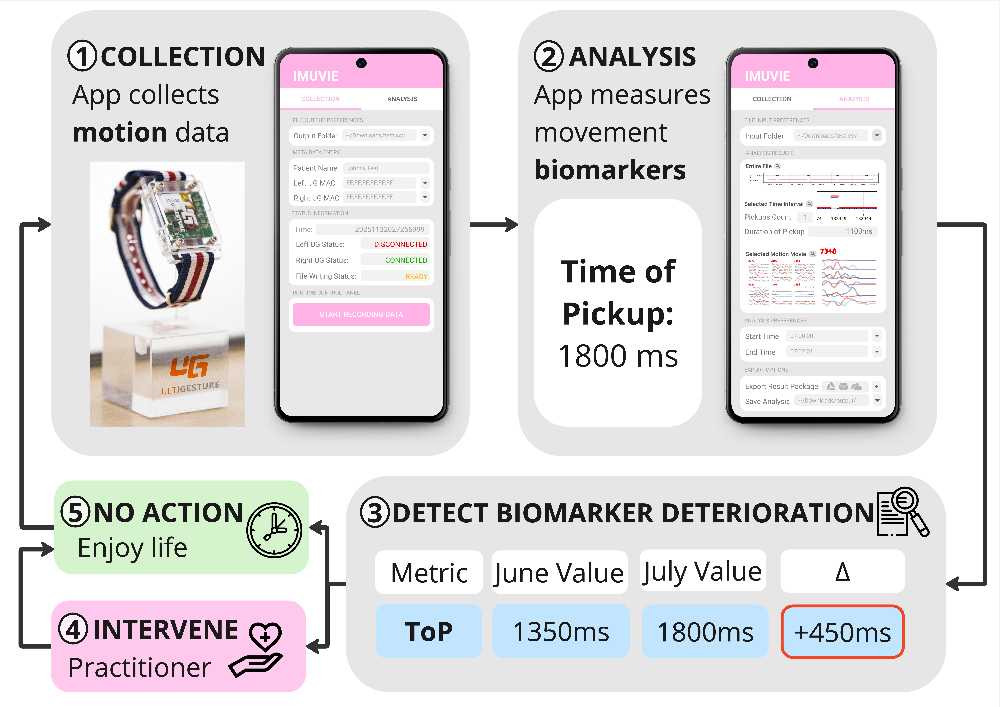
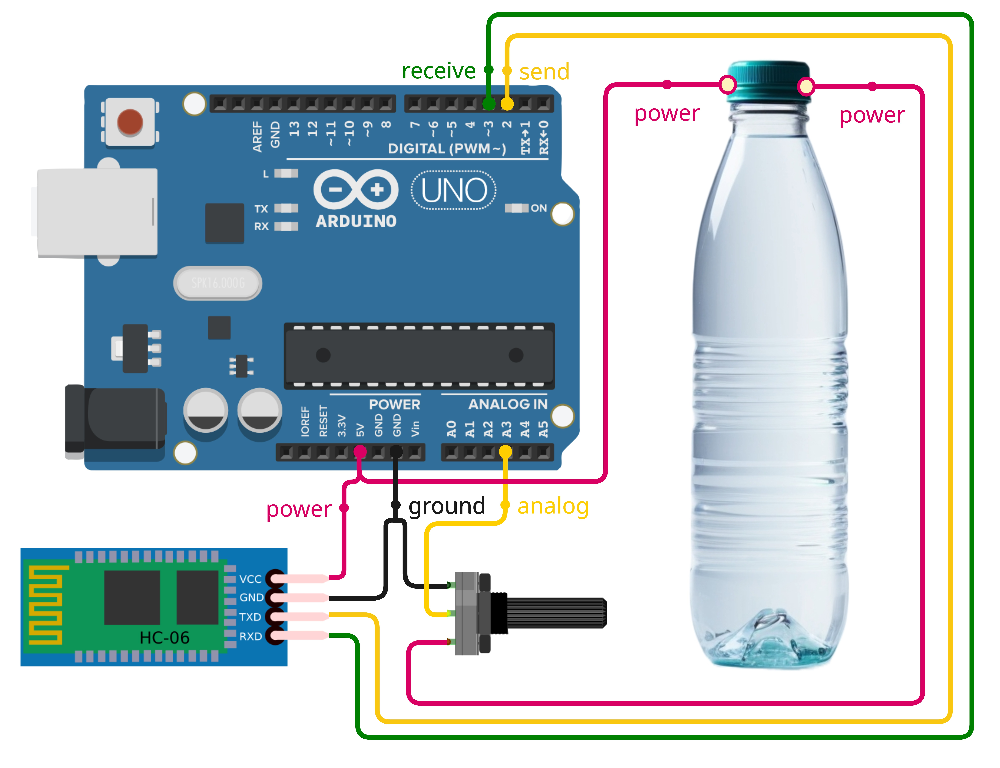

I'm a Computer Science Ph.D. candidate and research assistant at The College of William and Mary. I am part of the HealthComp lab and am advised by Dr. Gang Zhou.
I create human-centered mobile technology systems, solving real-world health and wellness challenges. My inventions help people live their best lives. I am commercializing my group's research through a Virginia-based startup, Motion Medix.
Advancing Healthy Aging Through Movement Insights.
We develop wearable sensor technology that tracks movement patterns and analyzes key biomarkers. Our system helps older adults and individuals with movement-related conditions—like Parkinson’s disease—monitor changes in their mobility over time. By turning everyday movement into actionable data, we empower users and their care teams to make more informed decisions and improve treatment outcomes.
Based on our peer‑reviewed research publication. Read it here.
Smart Electrolyte Sensing—Anywhere.
Our unobtrusive mobile sensor turns almost any container or surface into a real‑time electrolyte tester. From smart water bottles and fruit probes to medicine flasks and hydration tanks, the system instantly measures electrolyte content and delivers clear, actionable data to everyday users—no lab or expertise required. By democratizing electrolyte analysis, we give athletes, patients, and wellness‑minded consumers the insight they need to make informed decisions about hydration and nutrition.
Based on our peer‑reviewed research publication. Read it here.
